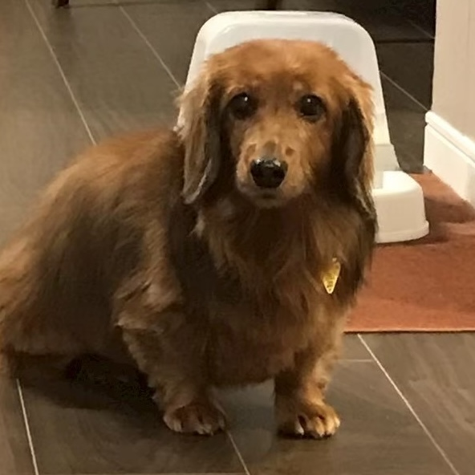
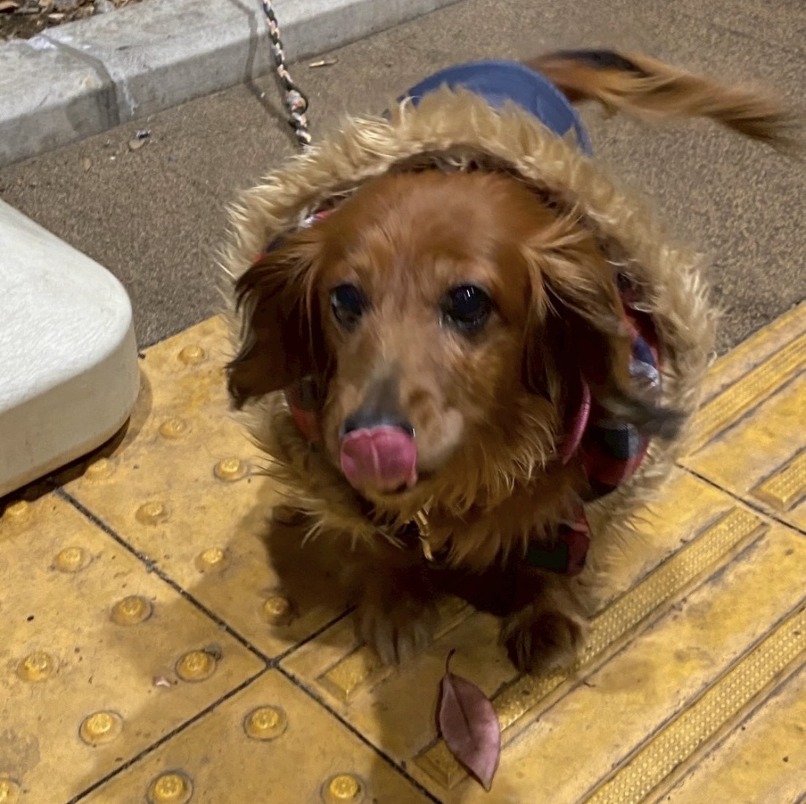
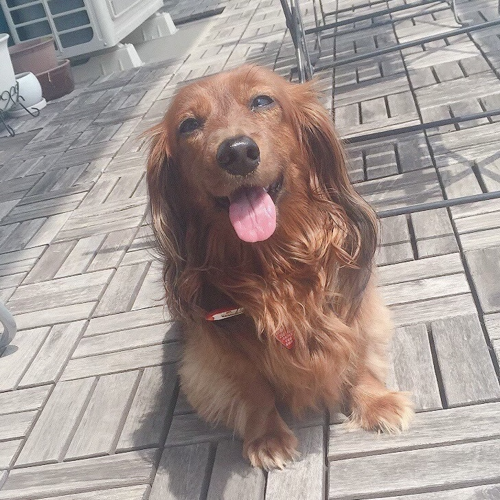

「好きなもの」の内容を無駄に凝りました。
一般的なWeb制作では、まず書きたい内容があるはず。
伝えたい内容があることが、「どう見せれば伝わりやすいか」を考え、
そしてそれを実現させたいという思いが、プログラミングの原動力に繋がるのだと思います。
語るのが好きなのでその思考プロセスを再現したくて内容に凝った結果、
自然とデザインや構成のアイディアが出て、それらを実現させたいという熱量で頑張ってプログラミングをしました。
実際に手を動かして問題にぶつかり、それを解決するために違うアプローチをするなどして楽しみながら制作できました。
自己紹介
- 名前：増岡真帆（学籍番号：AL26017）
- 趣味：アニメ, 音楽（特にJPOP）, ソロ活, 料理
- 興味のある学問：宇宙物理学
- 好きなアニメ：進撃の巨人, 夏目友人帳, 亜人
- 好きなアーティスト：キタニタツヤ, Chevon, 美波
- 所属：ミュージックファミリー部（ボーカル, ギターボーカル）, 英語部, デジクリ,アニメ研究会
一緒に暮らしていた愛犬アリス↓



このホームページのこだわり
＜試行錯誤＞
- 全体的に見やすいシンプルさと細部の完成度の高さ、洗練されたおしゃれさを追求。
また「ユーザを迷子にしない」をモットーにしている。 - ヘッダーの透明度を調整して白文字の見やすさと後ろの文字の見やすさを両立させた。
- 本文を入れる箱をcssで作りその位置を調整することで、ヘッダーで本文が隠れてしまう問題、パソコンで見た時に右の余白が気になる問題を解決。
- 別ページに飛ぶリンクにカーソルを合わせた時に下線が出てくるようにし、モーションをつけてみた。
- 別ページに飛ぶとタブが増えてしまう現象が不便だと思い、なるべく同じページで完結するようにし、目次を作り同じページのリンクに飛ばすことで利便性を高めた。
- 一番最後までいったときに簡単に目次に戻れるようリンクを置いた。
- 目次から飛ぶときにモーションをつけることで自分がどの位置に飛んだかわかりやすくした。
- 目次から飛ぶとヘッダーで本文が隠れてしまう問題があったためその位置調整も行った。
- 内容が多くてもわかりやすいように収納できる機能を搭載。
- フッターとヘッダーの横幅を全画面にするのに苦労した。
- Googleサイトだとこれまでの工夫が無駄になると知り絶望。
- 作品のページにて、コードを埋め込んだボックスの配置やその説明のテキスト、画像の配置にこだわった。
（横に分割して幅を調整するのが特に大変） - スマホ対応にするために文字の大きさや配置や幅を調整した。